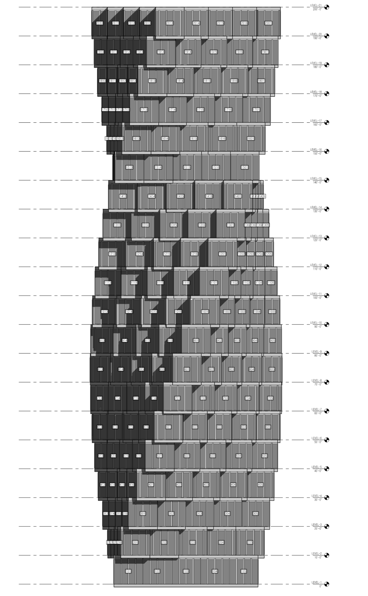

Dongwoo Suk
Computational Design Specialist
← → ↑ ↓ or click arrows to navigate
Education & Experience
Education
- M.Arch I — SCI-Arc (2018)
- BFA Interior Design — Pratt Institute (2015)
Certifications
- AIA Associate Member
- LEED Green Associate
- McNeel Grasshopper Level 1
- AI for Architects (ELVTR)
Experience
- Steinberg Hart (2022–Present)
Computational Design Specialist / ADG Lead
~10 members across 6 offices - The Code Solution (2019–2021)
Junior Designer - Oyler Wu Collaborative (2017, 2019)
Intern Designer — Design & fabrication for award-winning pavilion / exhibition
Awards & Technical Skills
Project Awards (8)
- PCBC Gold Nugget Grand Award — Best 55+ Community (Ellore)
- PCBC Gold Nugget Merit ×4 — Mixed-Use, Community, Multi-Family (Ellore + Clara)
- SHN Architecture & Design Award — Best Assisted Living, 1st Place (Ellore)
- SVBJ Structures Award — Market-Rate Residential (Clara)
- AIA California Firm Award — Highest Firm Honor (Steinberg Hart)
Career Awards (3)
- J. Irwin & Xenia S. Miller Prize — Winning Design, Exhibit Columbus (The Exchange)
- Mies Crown Hall Americas Prize (MCHAP) — Selected Project, IIT (The Exchange)
- IIDA NY Chapter Student Award — Interior Design (Pratt Institute)
Technical Skills
- Parametric: Rhino, Grasshopper
- BIM: Revit, Rhino.Inside.Revit, Dynamo
- Programming: Python, C#, GhPython
- AI: LLM Integration, RAG, Vector DB, Vision AI
- Full-Stack: Next.js, TypeScript, PostgreSQL
34+ Media Articles
- Fast Company, Architectural Record
- Dezeen, ArchDaily, NBC Bay Area
Grasshopper Python
Parametric Design Automation & Optimization Scripts
Grasshopper Python
Rhino 8 CPython Scripts for AEC Workflows
Projects
Building Massing Generator
Parametric Automation + Evolutionary Optimization

Facade Panelization Tool
Automated Panel Placement & Vector Analysis on Curved Facades
Parking Stall Tracker
Excel-Driven Parking Data Visualization in Rhino

Rhino.Inside.Revit Workflow
Bridging Parametric Design and BIM Documentation


Rhino.Inside.Revit Workflow
Bridging Parametric Design and BIM Documentation


Case Studies
Case Study: 5x5 Building Elefront
Full Building RIR Pipeline — Rhino to Revit
- Complete building from Rhino → Revit
- Floor slabs, walls, facade, columns, mullions
- Phased approach: structure → envelope → interiors
- Grasshopper script drives all Revit elements

5x5 Building: Rhino → Revit
Drag the handle to compare

 Rhino
Revit
Rhino
Revit
5x5 Building: Component Breakdown
 Floor Slabs
Floor Slabs
 Facade
Facade
 Structural Columns
Structural Columns
5x5 Building: Revit Phase Progression
Structure → Envelope → Complete
 Phase 1: Structure
Phase 1: Structure
 Phase 2: Envelope
Phase 3: Complete
Phase 2: Envelope
Phase 3: Complete
5x5 Building: Documentation


Case Study: Cal Poly Modular Housing
Revit Model Group — Largest Modular in U.S. (4,200 beds, $1.2B)
Cal Poly: RIR Process
Model Group Population Pipeline
 Step 1
Step 1
 Step 2
Step 2
 Step 3
Step 3
 Step 4
Step 4
 Step 5
Step 5
 Step 6
Step 6
Cal Poly: Views


Case Study: Adaptive Curtain Wall
Parametric Facade Panel System — RIR to Revit
Adaptive Curtain Wall: Design Views
 Axonometric
Axonometric
 South Elevation
South Elevation
 Plan
Plan
Adaptive Curtain Wall: Panel Component


Adaptive Curtain Wall: Sun Hour Analysis

Case Study: Frit Pattern Design
Grasshopper-Based Facade Pattern Generation
Frit Pattern: Elevation & Details


Frit Pattern: Design Concept

Open-Source Development
AEC Tools & AI-Powered Applications
Projects
Rhino Grasshopper MCP
AI-Powered Design Assistant with ML Auto-Layout
Design Intelligence Platform
Cloud Design Data Infrastructure + Optimization Engine
AEC Outlook MCP
AEC-Specialized Email Intelligence with Vision AI
Grasshopper Quality Analyzer
Automated Code Quality for Computational Design
LEED AP Study Application
AI-Powered Exam Preparation Platform